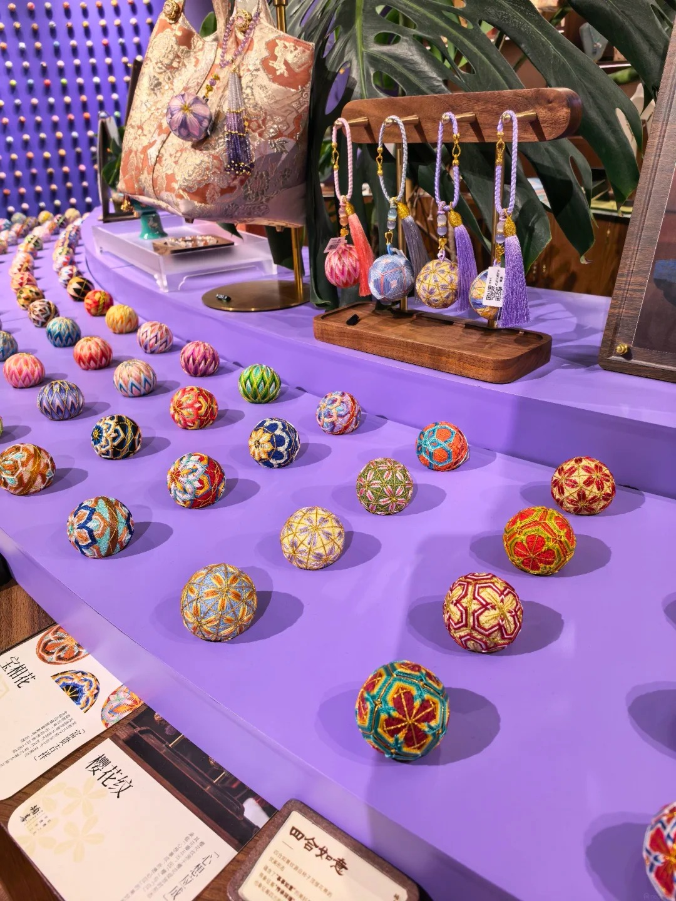
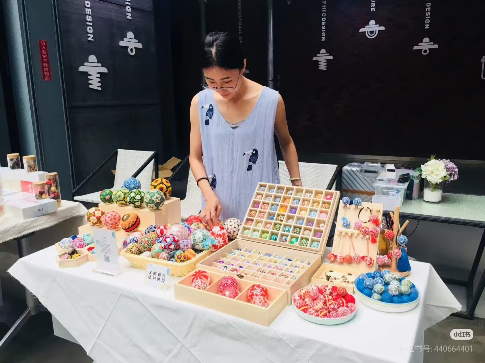

待补图片太平绣球主视觉
待补图片太平绣球主视觉
太平， 可以怎么玩？
山西太平绣球当代产品与体验共创探索
总览
这次， 我们想解决 三件事
不是只做一个新造型，
而是把产品、选择过程和带走后的体验连起来。
01
为什么要做
不只是被看见， 还要有人愿意带回生活。
传统技艺
当代产品
进入生活
 待补图片项目计划书截图
待补图片项目计划书截图
这次共创希望太平绣球不仅被展示，也能成为今天真正会被选择、使用和购买的产品。
01 / 为什么要做
什么不能动
不把它改得不像自己。
01 / 为什么要做
市场已经证明：
绣球可以成为今天的产品

待补案例图顿喜产品
顿喜
把传统绣球做成东方礼物。
祈福随身挂饰门店礼赠
待补案例图日本手まり
日本手まり
没有改变“球”，而是让球进入陈设、香和收藏。
工艺球体生活方式
但是，
“年轻人为什么每天愿意挂着它”
还有空间。
01 / 为什么要做
绣球不缺文化， 缺的是购买理由。
爱情、定情、婚嫁，普通朋友送有时显得太重。
好看，但为什么要一直挂在包上？
首饰、花、毛绒、香水，都有成熟的送礼理由。
所以，重点不只是新造型。
02
绣球本身怎么玩
先把它看成一颗球。
不改球，只增加球和小配件之间的关系。
02 / 绣球本身怎么玩
配件要轻， 球还是主角。
太平绣球 约 75-85%
小配件 约 15-25%
贵的是绣球，配件负责让它多一点变化。
02 / 绣球本身怎么玩
山西元素， 不要压过绣球。
一只简化手势托着球。
屋檐下，绣球像月亮。
莲、盘长结、法轮做小型垂饰。
不是堆符号，而是找到一个和球真正有关系的画面。
03
系列怎么成立
先有产品，
再补意义
现成绣球
说它属于某个星座
最后补一句寓意
先有意义，
再做造型
先确定想表达什么
找到对应视觉特征
再决定配件和组合
系列不是给现有绣球贴标签。
03 / 系列怎么成立
“十二” 可以有很多答案。
动物的耳、角、爪、尾、动作
兔耳 / 虎爪 / 猴子趴住最容易认出的星座特征
白羊角 / 巨蟹钳 / 天蝎尾今天真正想顺一点的小事
睡得着 / 赶得上 / 早点回重点不是选哪一种“十二”，而是每一套都先有自己的理由。
03 / 系列怎么成立
系列的视觉原则
系列主题
+
对应特征
+
太平绣球
=
完整一款
十二生肖+兔耳+绣球=兔款
星座+白羊角+绣球=白羊款
小太平+跑路腿+绣球=赶得上
04
怎么买，也可以成为体验。
不只是“看到、付款、带走”。
看到
挑一个
付款
带走
想一想
选一选
自己完成一下
带走
04 / 买绣球的过程怎么玩
一颗太平， 可以这样被得到。
- 今天想要什么？
- 找到几个方向
- 选择绣球
- 选一个小配件
- 自己完成最后一下
- 得到对应小卡
整个过程控制在 1-3 分钟，不做复杂测试，不做长时间手作。
04 / 买绣球的过程怎么玩
先有一个理由， 再开始挑球。
顺一点
睡好一点
早点回
见得到
有点好运
随便来一个
给自己，选“我现在想要什么”。
送别人，选“我想祝他什么”。
04 / 买绣球的过程怎么玩
再选 这一颗长什么样。
不是随便乱搭。每套系列提前设计好几组合理组合。
04 / 买绣球的过程怎么玩
最后一下， 留给自己。
不用复杂手作。一个小动作，就会让人记住：这是我完成的。
05
除了绣球，还能带走什么？
每一颗球，
可以有一张自己的卡。
普通状态
光照以后
纹样来自这颗绣球，不是一张通用说明卡。
05 / 买完以后还能留下什么
把这一颗的故事， 一起带走。
“小事顺一点，也算太平。”
“今天早点回。”
“第一次去新的城市，也要平平安安。”
05 / 买完以后还能留下什么
最后， 我们想做的是这一整套。
太平绣球
让球有变化
让选择更有参与感
留下纹样与祝福
不是让绣球变复杂，
而是让人多几个喜欢它、选择它、带走它的理由。
下一步
产品小样 + 体验流程 + 透光卡
先做一套完整样机，再判断哪些最适合继续发展。